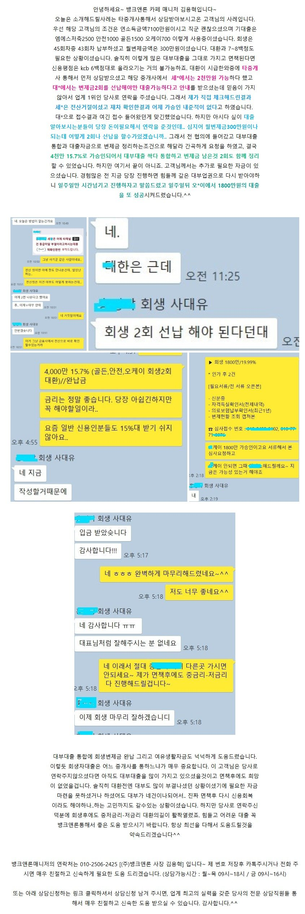

대출사례[개인회생자대출필독] 뱅크앤론이 어떻게 타중개사와 다른지 알 수 있는 사례.원본 등록일 2025.06.13 · 글 번호 3427 · 백업 당시 조회수 571  상담신청 -> https://cafe.naver.com/cityman88/29497 https://cafe.naver.com/cityman88/308123[출처] [개인회생자대출필독] 뱅크앤론이 어떻게 타중개사와 다른지 알 수 있는 사례. (뱅크앤론 - 개인회생자대출 및 일반 신용, 담보 대출. 뱅크앤론) | 작성자 뱅크앤론 매니저